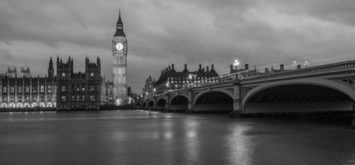

A LA ORILLA DEL TÁMESIS
Fotografía realizada el 22 de octubre de 2008 y múltiplemente galardonada en los Sony World Photography Awards.

Fotografía realizada el 22 de octubre de 2008 y múltiplemente galardonada en los Sony World Photography Awards.